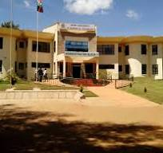

OUR PROFILE
Vision
A University of excellece transforming society through science, cutting edge technology and innovation
Mission
To provide quality university education, training and research in science, technology and innovation
Core Values
- Innovation
- Integrity
- Professionalism
- Quality
Philosophy
Meru University of Science and Technology is based on the philosophy of empowering minds and generating knowledge in science, technology and innovation(STI) for societal transformation
A Legacy Of Excellence, Innovation and Transformation
The history of Meru University of Science and Technology(MUST) dates back to the early 1960s when the community envisioned an institution of higher learning
In 2008 the government of Kenya upgraded MECOTECH to Meru University College of Science and Technology
Today, MUST continues tyo expand accademic programs, research and innovations while preparing students for the future